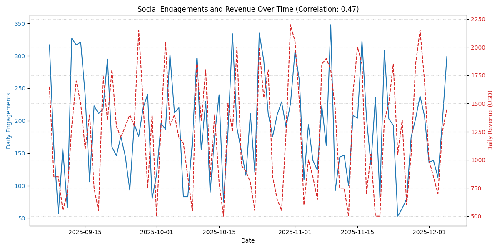
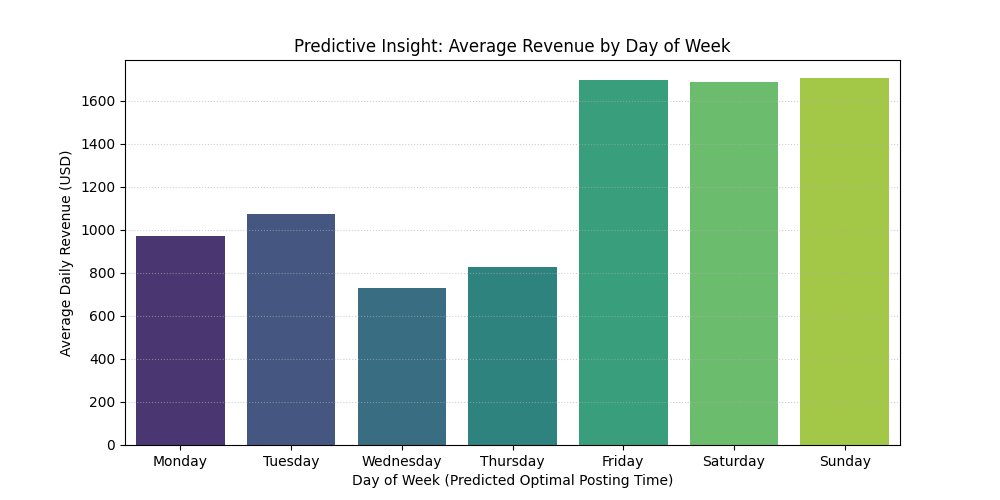
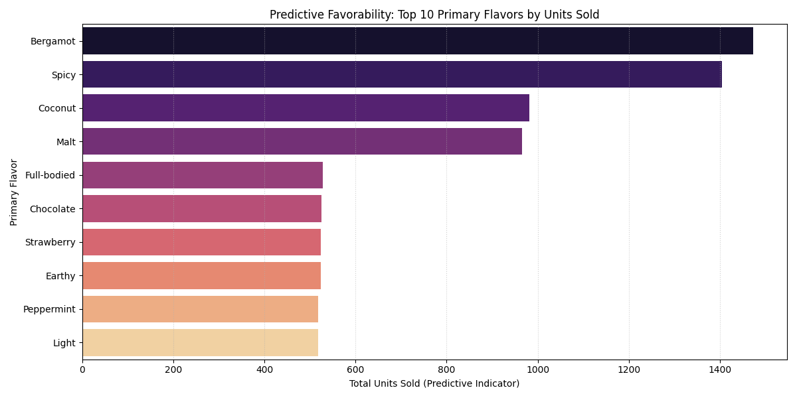

Conversion Compass Insights Dashboard
Key Analytical Metrics for Tea Sales and Social Engagement.
Social Media Performance
Daily Engagements vs. Revenue

Optimal Posting Day Prediction

Product & Flavor Insights
Top 10 Primary Flavors (Predictive)

Social Media Performance
Daily Engagements vs. Revenue

Optimal Posting Day Prediction
